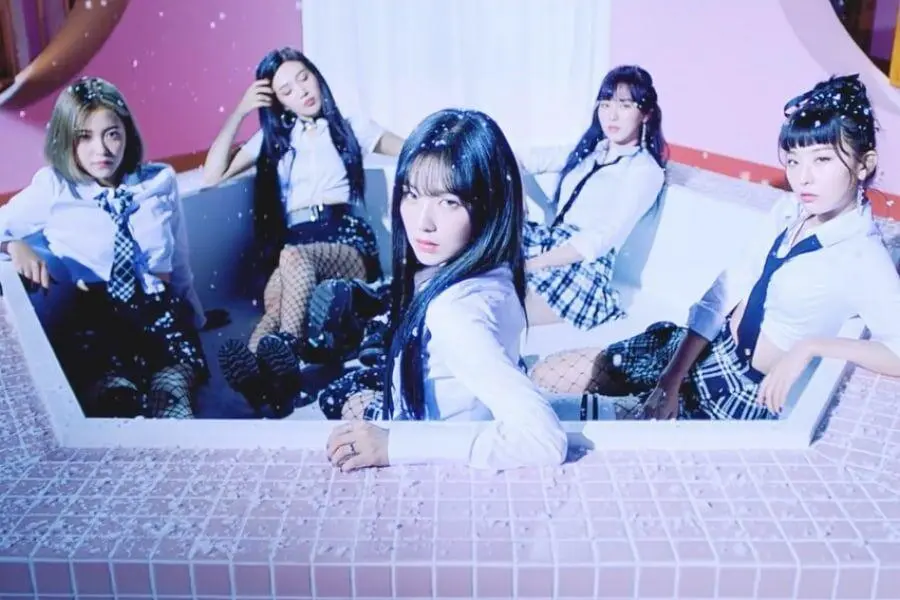

¿Quiénes son?
Red Velvet es un grupo de K-pop formado por SM Entertainment en 2014. Está compuesto por cinco integrantes: Irene, Seulgi, Wendy, Joy y Yeri. Su música y concepto combinan dos estilos distintos:
- "Red" representa su lado vibrante, divertido y juvenil, con canciones pop enérgicas.
- "Velvet" muestra un estilo más elegante, maduro y sofisticado, con influencias de R&B y baladas..
Recomendaciones de álbumes
Feel My Rhythm—2022
Este álbum es parte de la serie The ReVe Festival y presenta un concepto artístico inspirado en el arte clásico, con referencias a pinturas renacentistas. "Feel My Rhythm" es el tema principal y samplea la "Suite No. 3 en Re Mayor, BWV 1068" de Bach.
The ReVe Festival: Day1—2019
Este álbum es la primera parte de The ReVe Festival y tiene una vibra colorida y extravagante, inspirada en la energía de los festivales de verano. La canción principal, "Zimzalabim", es una explosión de sonidos electrónicos y ritmos hipnóticos, con una coreografía intensa.
Perfect Velvet—2017
Este álbum representa el lado "Velvet" de Red Velvet, con una atmósfera más oscura y sofisticada. "Peek-A-Boo" combina un sonido pop y R&B con un misterio cinematográfico, presentando una historia intrigante sobre un grupo de chicas que cazan repartidores de pizza.
The Red—2015
Este álbum representa completamente el lado "Red" de Red Velvet: divertido, energético y experimental. La canción principal, "Dumb Dumb", es una explosión de ritmos pegajosos y un estribillo adictivo, con una coreografía llena de movimientos robóticos.
Opinión de Psycho
"Psycho" es una de las canciones más icónicas de Red Velvet. Con una melodía envolvente de pop-R&B y
arreglos orquestales crea una atmósfera sofisticada y melancólica.
La letra habla de una
relación
intensa y adictiva que los demás no comprenden pero que los protagonistas no pueden abandonar. Las
voces destacan por su armonización y la producción minimalista refuerza la elegancia del tema.
Su
video musical combina una estética gótica y cinematográfica con un concepto de cuento oscuro.
A
pesar de la falta de promociones debido al accidente de Wendy "Psycho" fue un gran éxito dominando
listas digitales y consolidando a Red Velvet como una de las principales fuerzas del K-pop.
La canción el día es, ¡Bad Boy!

Es una de las canciones más sofisticadas de Red Velvet con un sonido R&B y hip-hop envolvente una
coreografía icónica y una estética visual cinematográfica.
Su producción impecable y su vibra oscura
la hacen destacar dentro del K-pop además de ser un gran éxito global. "Bad Boy" es perfecta para
cuando quieres sentir confianza y actitud combinando misterio elegancia y poder.